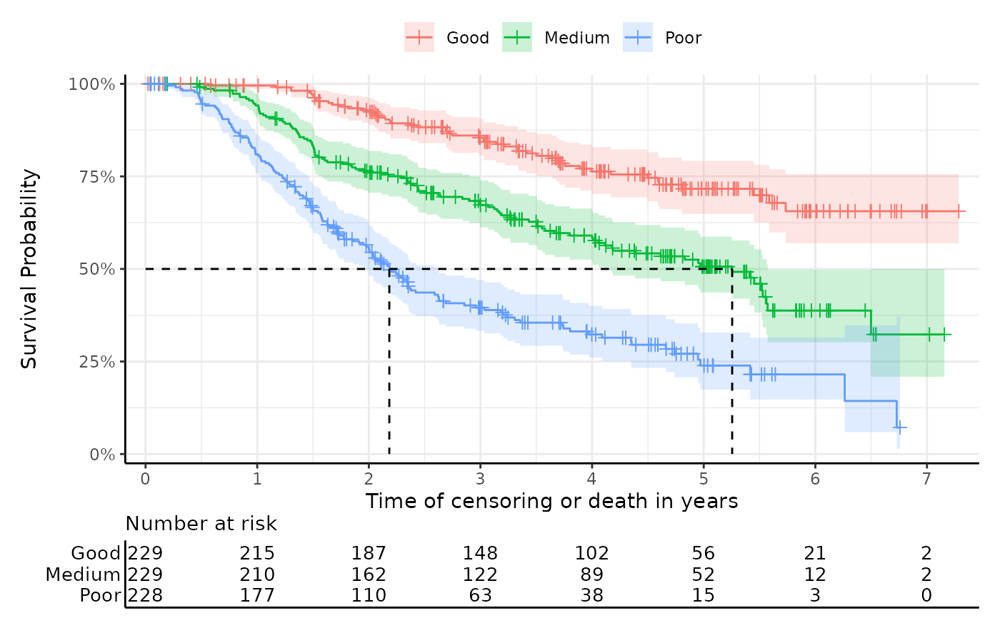

Calculates Kaplan-Meier estimates for survival data and returns summary statistics, plots, and additional outputs.
Arguments
- data
A data frame containing the survival data.
- time
The name of the column in
datacontaining the time-to-event information.- event
The name of the column in
dataindicating whether the event of interest occurred.- group
(Optional) The name of the column in
datadefining the grouping variable. Default isNULL.- group_labels
Optional character vector containing the names of the strata (default is NULL). Provide in a consistent order with
levels(as.factor(data$group)).- just_km
Logical. If
TRUE, only the Kaplan-Meier estimates are returned. Default isFALSE.- ...
(Optional) Parameters to pass to ggsurvfit.
Examples
km_results <- get_km(
data = easysurv::easy_bc,
time = "recyrs",
event = "censrec",
group = "group",
risktable_symbols = FALSE
)
km_results
#>
#> ── Kaplan-Meier Data ───────────────────────────────────────────────────────────
#> The get_km function has produced the following outputs:
#> • km: A `survival::survfit()` object for Kaplan-Meier estimates.
#> • km_for_excel: A list of stepped Kaplan-Meier data for external plotting.
#> • km_per_group: A list of Kaplan-Meier estimates for each group.
#> • km_plot: A Kaplan-Meier plot.
#> • km_summary: A summary table of the Kaplan-Meier estimates.
#>
#> ── km Summary ──
#>
#> group records events rmean se(rmean) median 0.95LCL 0.95UCL
#> Good Good 229 51 5.934330 0.1616003 NA NA NA
#> Medium Medium 229 103 4.600852 0.1856699 5.254795 4.115068 5.572603
#> Poor Poor 228 145 3.101736 0.1772520 2.183562 1.978082 2.619178
#> Median follow-up
#> Good 4.452055
#> Medium 4.712329
#> Poor 4.115068
#>

#> "km_plot" has been printed.
#> ────────────────────────────────────────────────────────────────────────────────
#> → For more information, run `View()` on saved `get_km()` output.